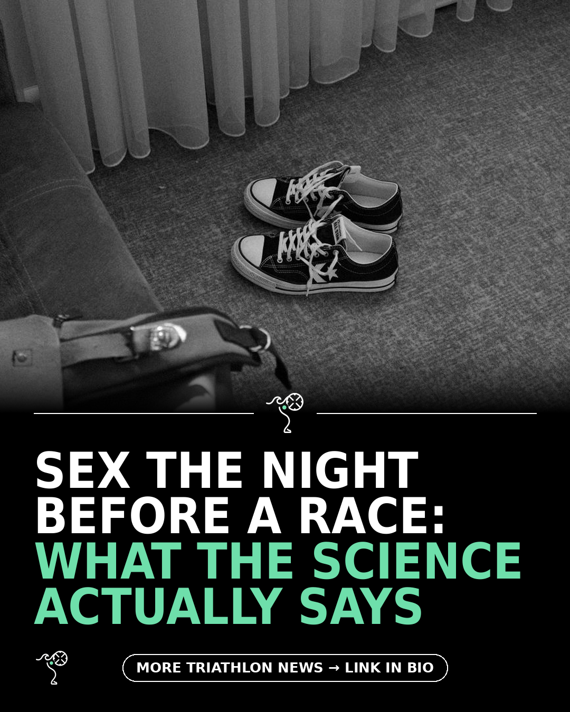

SEX THE NIGHT BEFORE A RACE: WHAT THE SCIENCE ACTUALLY SAYS The rule every coach has heard: no sex the night before you race. 220 Triathlon went to the research and found the abstinence myth does not hold up in any controlled study. Heart rate the next morning is unchanged, VO2 max is unchanged, leg strength is unchanged. What actually costs you performance is bad sleep, late food, and race-morning anxiety, which is where the ritual probably came from in the first place. So the honest answer is that your bedtime, your dinner and your head matter far more than what you did an hour before lights out. Which means the pre-race rules you inherited from your first club might be worth questioning one by one. What's one pre-race superstition you still follow even though you know it's nonsense? 🔗 More triathlon news and every story from today → link in bio (@arnaudlhote) Into triathlon? Follow @arnaudlhote #triathlon #ironman #triathlontraining #t100 #raceday #triathlete #220triathlon #enduranceathlete
{kind=link}